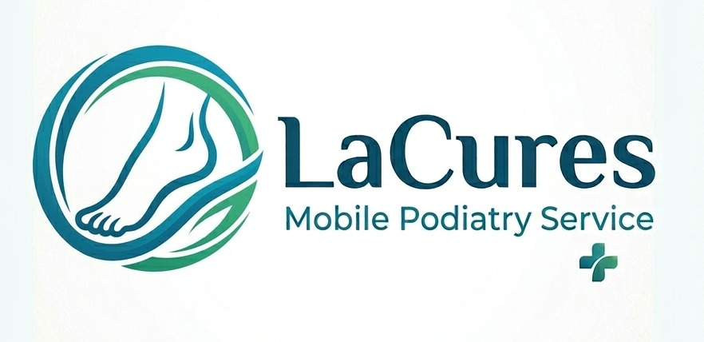
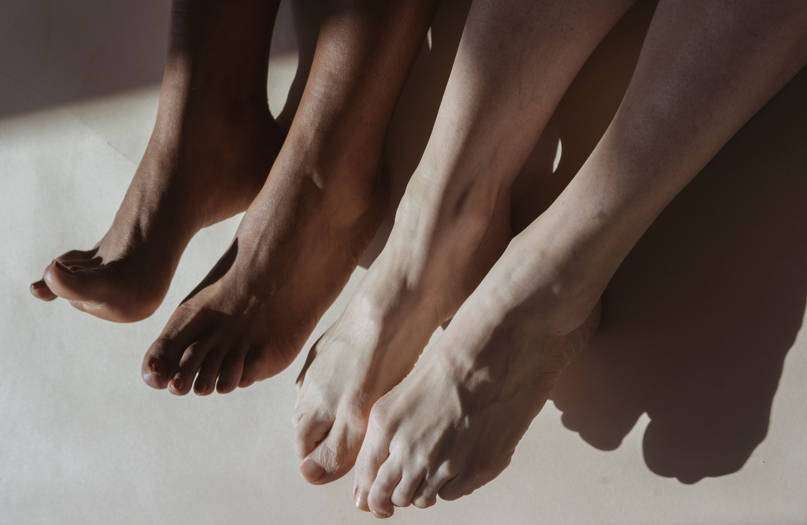

Welcome, I'm Lauren. As a BSc (Hons) registered podiatrist, I pride myself on delivering a friendly, professional service tailored to your needs. I am HCPC registered and insured by the Royal College of Podiatry.
I offer home visits in Birmingham and surrounding areas. Care home services are also available.
Professional foot care in the comfort of your own home. Services include:
Please get in touch to discuss your foot care needs or to arrange a home visit.
Telephone: 07956 353 027
Email: Lacures@hotmail.com
Professionally Registered and Insured